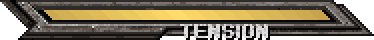
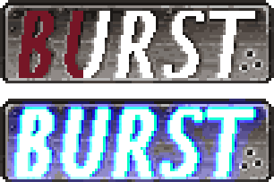

heres a list of what you would need to get started
there is nothing needed to play the game except what was mentioned above, so no accounts or any of that sort
the buttons tied with movment are W,A,D,S. W is to move up, S is to move down, A is to move away from opponent, and D moves you towards the opponent.
there are 5 attack buttons, by default they ar J,U,I,O,P.
J is to punch, U is to kick, I is to slash, O is to heavy slash, and p is dust (launches opponent in the air)
the game uses the initals of each action to specify the action ie P, punch.
now when navigating the menues kick is select, slash is the back button, and W,S to go up and down respectively.
there are 3 meters to watch out for: health, burst, and tension.

this is a full tension meter, it starts empty but as you play aggressively it fills up.
the tension meter is used for overdrive moves (more on those here)

this is the burst meter it shows you when you can burst. bursting lets you break out of conbos when you press any attack button and the burst button.
the last meter we will talk about is the health meter/bar, it is at the top of the screen and starts green and when hit a section of your helth turns red and rapidly depleates, that shows how much damage you took from the attack.